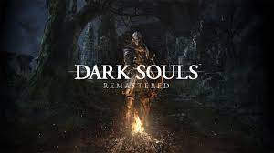

Dark Souls

Los jugadores toman el papel de un personaje humano no-muerto que ha sido elegido para realizar un peregrinaje para descubrir el destino de los no muertos.
El argumento de Dark Souls se va contando fundamentalmente a través de descripciones de objetos del juego, y diálogos con personajes no jugables (PNJs).